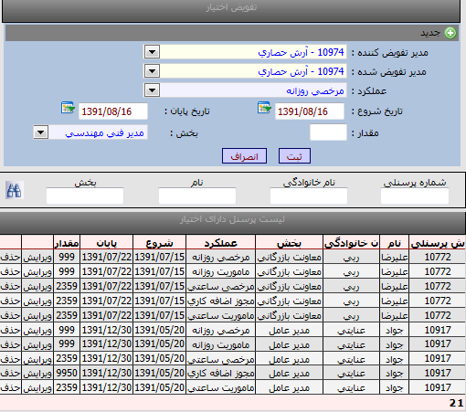

|
تفویض اختیار
|
 
|
|
تفویض اختیار
|
|
تفویض اختیار
هرمدیر می تواند برای یک بازه زمانی موردنظر ، یکی دیگر ازمدیران سازمان رافقط برای تایید یک يا چند نوع ازمجوزها(به تفكيك) انتخاب کند که به این عمل تفویض اختیارگفته می شود.
بطور مثال :در یک سازمان آمار مجوزهای ساعتی وروزانه مرخصی بالامی باشد و مدیراصلی چون همیشه در شرکت نیست به مدیر دیگری تفویض اختیار می دهد تاعملکرد مرخصی های روزانه و ساعتی را تایید آن مدیر نماید.
نحوه عملکرد تفویض اختیار:مدریری که بطورمثال عملکرد مرخصی روزانه به آن محول گردیده کلیه درخواستهای مرخصی پرسنل پخش تعریف شده خود را در کارتابل مشاهده می نماید تا بتواند تایید نماید درحالیکه این درخواستها در کارتابل مدیر اصلی (مدیر تفویض کننده )قابل مشاهد نمی باشد در واقع در این مورد فرق تفویض اختیار با جانشین مشهود است .
نکته 2: تعریف تفویض اختیار هم بوسیله کاربر admin سیستم انجام می شود وهم بوسیله مدیران قابل تعریف است بدین ترتیب که هر مدیری با کاربری خودش وارد برنامه گردش کار شده و مدیر جانشین و تفویض اختیار برای خودش تعریف می کند.
روش تفویض اختیار نمودن:
ابتدا از منوی مدیرتفویض کننده نام مدیر را انتخاب نمایید (بازدن شماره کارت مدیر می توانید دسترسی سریع داشته باشید)
سپس از منوی مدیر تفویض شده نام مدیری که می بایست به جای مدیر اولیه انتخاب شود را انتخاب نموده .(لیست فقط شامل مدیران بخشها می باشد)
از منوی عملکرد مجوز های قابل تایید را انتخاب می نمایید.
از منوی تاریخ ،محدوده تاریخی مجاز آن عملکرد انتخاب می گردد.
از منوی مقدار سقف آن عملکرد (سقف مجاز تایید مدیر تفویض اختیار شده )تعریف می گردد.
در منوی بخش ،بخش مدیر تفویض کننده قابل مشاهد و انتخاب است.
